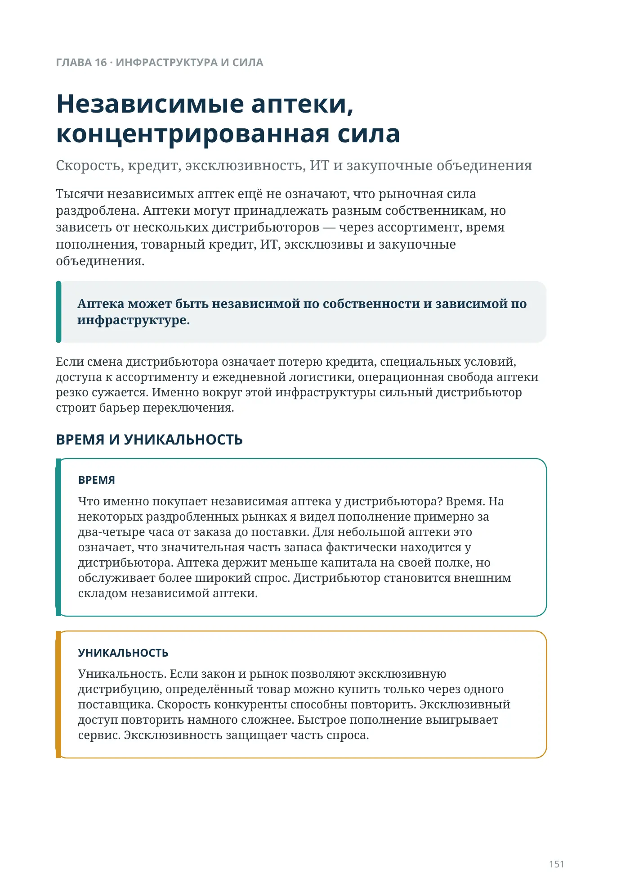
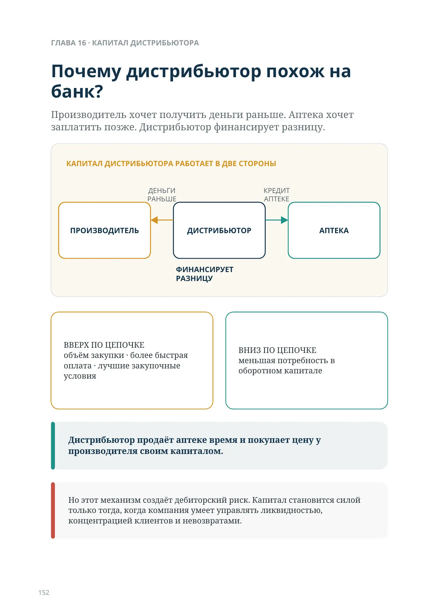
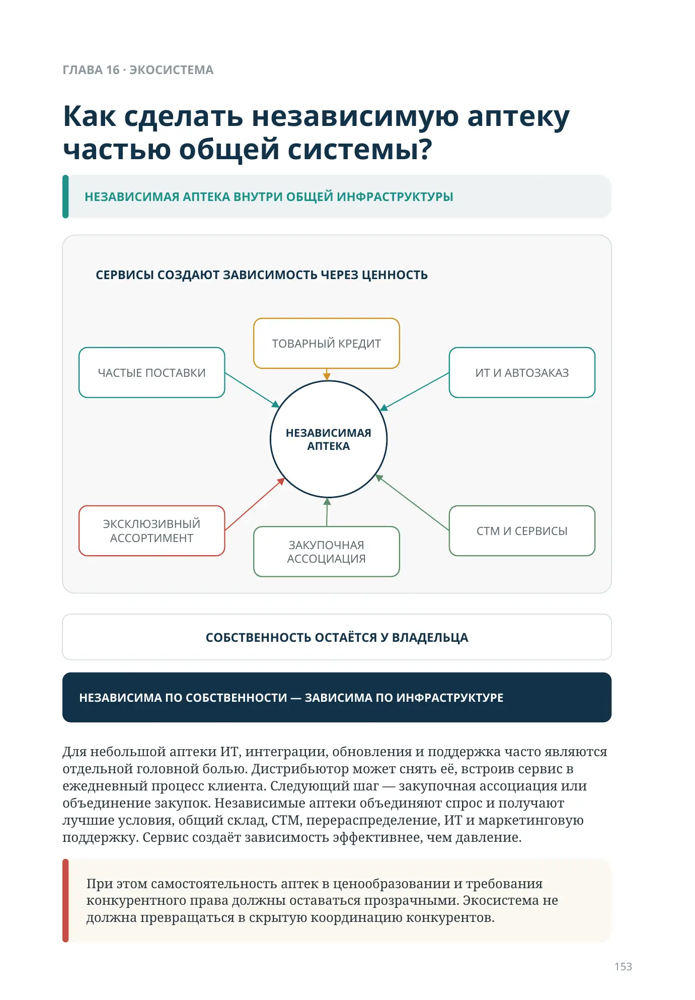
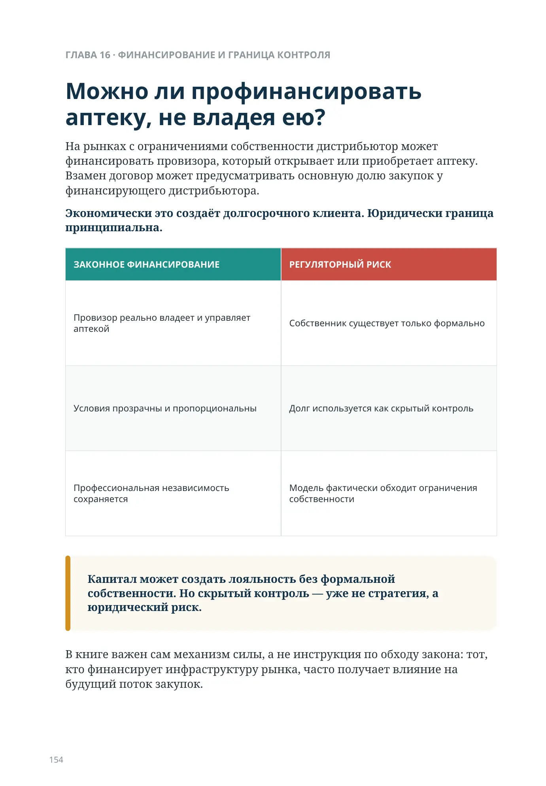
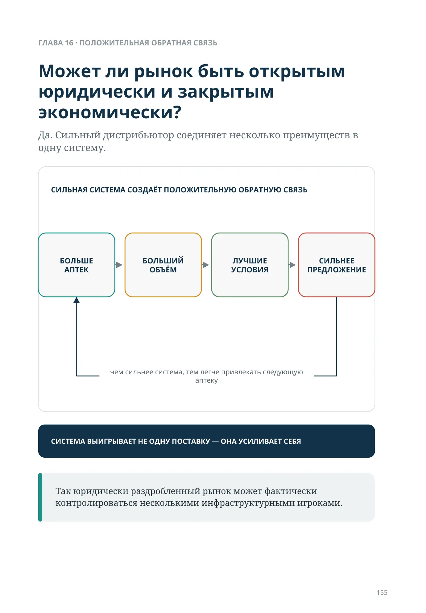
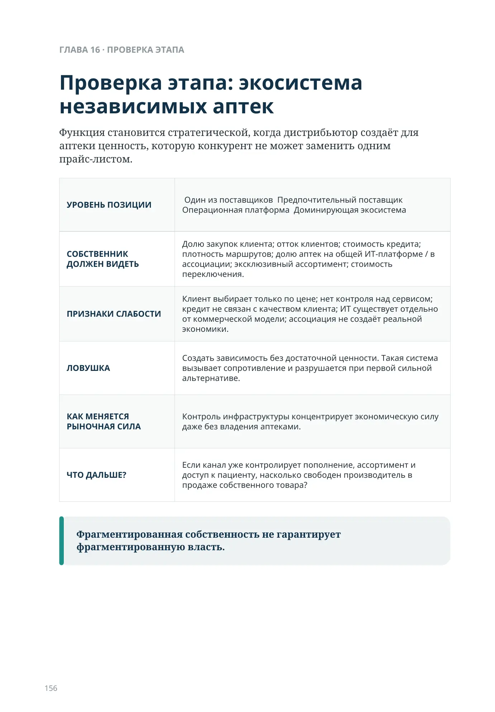
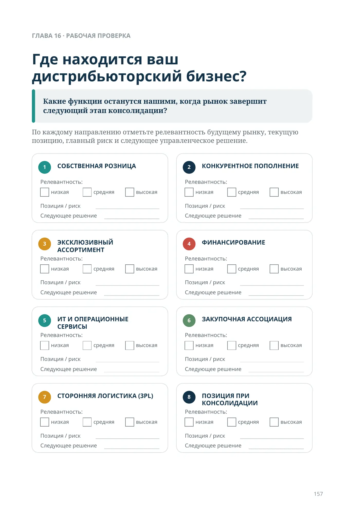
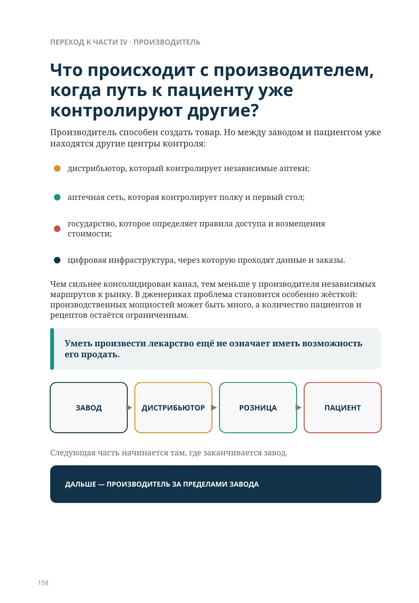

Независимые аптеки, концентрированная сила
Скорость, кредит, эксклюзивность, ИТ и закупочные объединения
Тысячи независимых аптек ещё не означают, что рыночная сила раздроблена. Аптеки могут принадлежать разным собственникам, но зависеть от нескольких дистрибьюторов — через ассортимент, время пополнения, товарный кредит, ИТ, эксклюзивы и закупочные объединения.
Аптека может быть независимой по собственности и зависимой по инфраструктуре.
Если смена дистрибьютора означает потерю кредита, специальных условий, доступа к ассортименту и ежедневной логистики, операционная свобода аптеки резко сужается. Именно вокруг этой инфраструктуры сильный дистрибьютор строит барьер переключения.
ВРЕМЯ И УНИКАЛЬНОСТЬ
Что именно покупает независимая аптека у дистрибьютора? Время. На некоторых раздробленных рынках я видел пополнение примерно за два-четыре часа от заказа до поставки. Для небольшой аптеки это означает, что значительная часть запаса фактически находится у дистрибьютора. Аптека держит меньше капитала на своей полке, но обслуживает более широкий спрос. Дистрибьютор становится внешним складом независимой аптеки.
Уникальность. Если закон и рынок позволяют эксклюзивную дистрибуцию, определённый товар можно купить только через одного поставщика. Скорость конкуренты способны повторить. Эксклюзивный доступ повторить намного сложнее. Быстрое пополнение выигрывает сервис. Эксклюзивность защищает часть спроса.
Почему дистрибьютор похож на банк?
Производитель хочет получить деньги раньше. Аптека хочет заплатить позже. Дистрибьютор финансирует разницу.
ВВЕРХ ПО ЦЕПОЧКЕ
- объём закупки
- более быстрая оплата
- лучшие закупочные условия
ВНИЗ ПО ЦЕПОЧКЕ
меньшая потребность в оборотном капитале
Дистрибьютор продаёт аптеке время и покупает цену у производителя своим капиталом.
Но этот механизм создаёт дебиторский риск. Капитал становится силой только тогда, когда компания умеет управлять ликвидностью, концентрацией клиентов и невозвратами.
Как сделать независимую аптеку частью общей системы?
Для небольшой аптеки ИТ, интеграции, обновления и поддержка часто являются отдельной головной болью. Дистрибьютор может снять её, встроив сервис в ежедневный процесс клиента. Следующий шаг — закупочная ассоциация или объединение закупок. Независимые аптеки объединяют спрос и получают лучшие условия, общий склад, СТМ, перераспределение, ИТ и маркетинговую поддержку. Сервис создаёт зависимость эффективнее, чем давление.
При этом самостоятельность аптек в ценообразовании и требования конкурентного права должны оставаться прозрачными. Экосистема не должна превращаться в скрытую координацию конкурентов.
СЕРВИСЫ СОЗДАЮТ ЗАВИСИМОСТЬ ЧЕРЕЗ ЦЕННОСТЬ
СОБСТВЕННОСТЬ ОСТАЁТСЯ У ВЛАДЕЛЬЦА
НЕЗАВИСИМА ПО СОБСТВЕННОСТИ — ЗАВИСИМА ПО ИНФРАСТРУКТУРЕ
Можно ли профинансировать аптеку, не владея ею?
На рынках с ограничениями собственности дистрибьютор может финансировать провизора, который открывает или приобретает аптеку. Взамен договор может предусматривать основную долю закупок у финансирующего дистрибьютора.
Экономически это создаёт долгосрочного клиента. Юридически граница принципиальна.
| ЗАКОННОЕ ФИНАНСИРОВАНИЕ | РЕГУЛЯТОРНЫЙ РИСК |
|---|---|
| Провизор реально владеет и управляет аптекой | Собственник существует только формально |
| Условия прозрачны и пропорциональны | Долг используется как скрытый контроль |
| Профессиональная независимость сохраняется | Модель фактически обходит ограничения собственности |
Капитал может создать лояльность без формальной собственности. Но скрытый контроль — уже не стратегия, а юридический риск.
В книге важен сам механизм силы, а не инструкция по обходу закона: тот, кто финансирует инфраструктуру рынка, часто получает влияние на будущий поток закупок.
Может ли рынок быть открытым юридически и закрытым экономически?
Да. Сильный дистрибьютор соединяет несколько преимуществ в одну систему.
чем сильнее система, тем легче привлекать следующую аптеку
Так юридически раздробленный рынок может фактически контролироваться несколькими инфраструктурными игроками.
СИЛЬНАЯ СИСТЕМА СОЗДАЁТ ПОЛОЖИТЕЛЬНУЮ ОБРАТНУЮ СВЯЗЬ
Проверка этапа: экосистема независимых аптек
Функция становится стратегической, когда дистрибьютор создаёт для аптеки ценность, которую конкурент не может заменить одним прайс-листом.
| УРОВЕНЬ ПОЗИЦИИ | ☐ Один из поставщиков ☐ Предпочтительный поставщик ☐ Операционная платформа ☐ Доминирующая экосистема |
|---|---|
| СОБСТВЕННИК ДОЛЖЕН ВИДЕТЬ | Долю закупок клиента; отток клиентов; стоимость кредита; плотность маршрутов; долю аптек на общей ИТ-платформе / в ассоциации; эксклюзивный ассортимент; стоимость переключения. |
| ПРИЗНАКИ СЛАБОСТИ | Клиент выбирает только по цене; нет контроля над сервисом; кредит не связан с качеством клиента; ИТ существует отдельно от коммерческой модели; ассоциация не создаёт реальной экономики. |
| ЛОВУШКА | Создать зависимость без достаточной ценности. Такая система вызывает сопротивление и разрушается при первой сильной альтернативе. |
| КАК МЕНЯЕТСЯ РЫНОЧНАЯ СИЛА | Контроль инфраструктуры концентрирует экономическую силу даже без владения аптеками. |
| ЧТО ДАЛЬШЕ? | Если канал уже контролирует пополнение, ассортимент и доступ к пациенту, насколько свободен производитель в продаже собственного товара? |
Фрагментированная собственность не гарантирует фрагментированную власть.
Где находится ваш дистрибьюторский бизнес?
Какие функции останутся нашими, когда рынок завершит следующий этап консолидации?
По каждому направлению отметьте релевантность будущему рынку, текущую позицию, главный риск и следующее управленческое решение.
Релевантность: низкая · средняя · высокая
Позиция / риск
Следующее решение
Релевантность: низкая · средняя · высокая
Позиция / риск
Следующее решение
Релевантность: низкая · средняя · высокая
Позиция / риск
Следующее решение
Релевантность: низкая · средняя · высокая
Позиция / риск
Следующее решение
Релевантность: низкая · средняя · высокая
Позиция / риск
Следующее решение
Релевантность: низкая · средняя · высокая
Позиция / риск
Следующее решение
Релевантность: низкая · средняя · высокая
Позиция / риск
Следующее решение
Релевантность: низкая · средняя · высокая
Позиция / риск
Следующее решение
Что происходит с производителем, когда путь к пациенту уже контролируют другие?
Производитель способен создать товар. Но между заводом и пациентом уже находятся другие центры контроля:
- дистрибьютор, который контролирует независимые аптеки;
- аптечная сеть, которая контролирует полку и первый стол;
- государство, которое определяет правила доступа и возмещения стоимости;
- цифровая инфраструктура, через которую проходят данные и заказы.
Чем сильнее консолидирован канал, тем меньше у производителя независимых маршрутов к рынку. В дженериках проблема становится особенно жёсткой: производственных мощностей может быть много, а количество пациентов и рецептов остаётся ограниченным.
Уметь произвести лекарство ещё не означает иметь возможность его продать.
Следующая часть начинается там, где заканчивается завод.